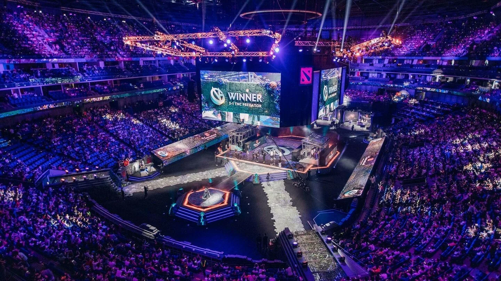
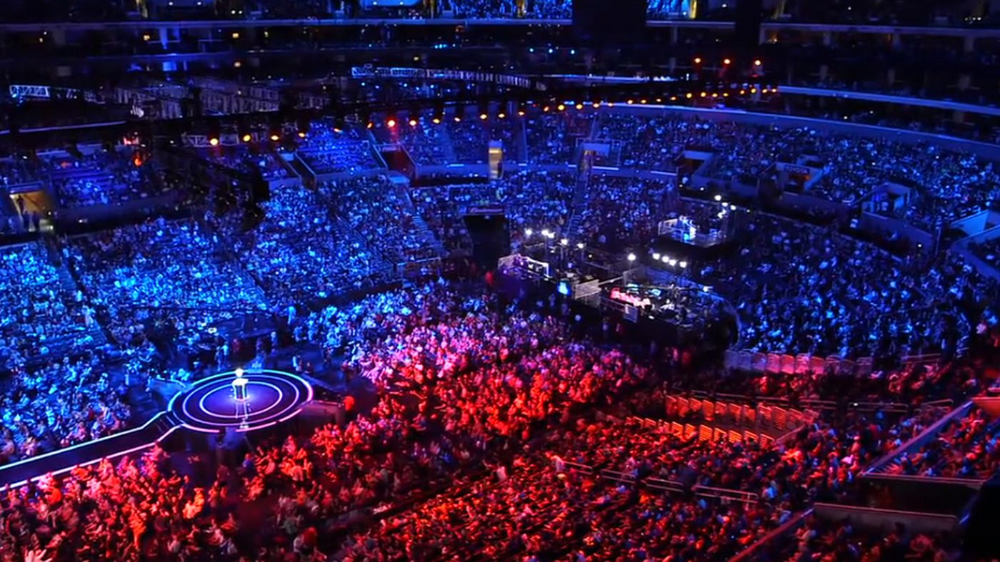
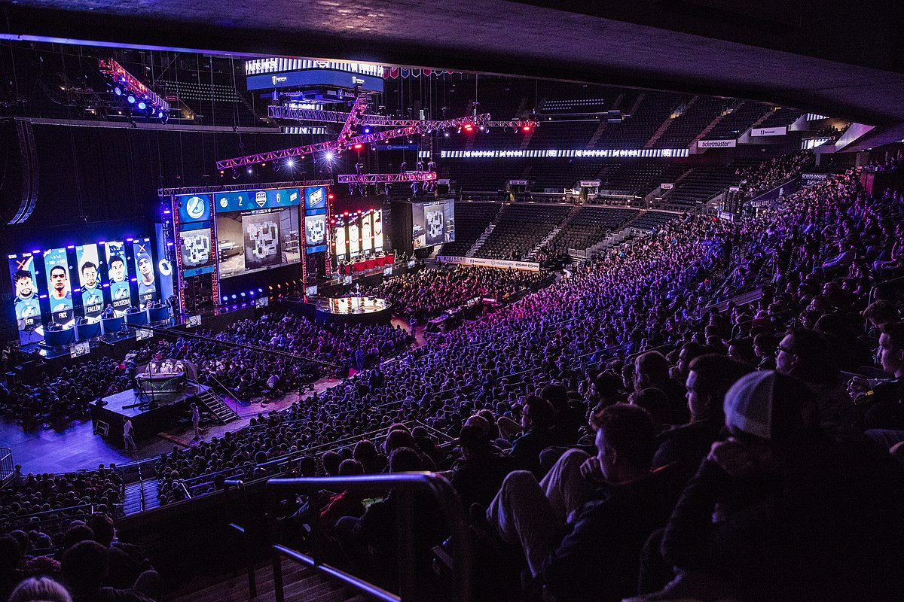

Почему кибер спорт набирает популярность?
Увеличение интереса к видеоиграм
С увеличением доступности игровых платформ, разнообразия жанров и возможности играть в сети с друзьями, игры становятся все более популярными среди людей разных возрастов.
Возможности для заработка
Профессиональные киберспортсмены могут зарабатывать большие деньги благодаря призовым фондам на турнирах и контрактам с командами и спонсорами.
Больше медийного внимания
Киберспорт становится все более признанным видом спорта, что привлекает внимание спонсоров, телевизионных каналов и других медийных платформ.
Культурное признание
Киберспорт объединяет людей по всему миру и создает свою собственную культуру, основанную на общих интересах и ценностях.
Самые крупные турниры
The International
Крупнейший турнир по игре Dota 2, организуемый Valve. Призовой фонд каждого турнира составляет миллионы долларов. Начиная с 2011 года турниры The International проводятся один раз в год и являются наиболее главным и престижным событием года в дисциплине Dota 2, как по размеру суммы призовых, так и по составу участников[2]. The International считается аналогом чемпионата мира в других видах спорта, победа в котором является наивысшим достижением для игроков и команд со всего мира. Призовой фонд первого турнира в 2011 году был беспрецедентным для киберспорта и составил 1,6 млн долларов, но, начиная с 2013 года, ежегодно бьёт рекорд по сумме призовых — в 2021 году призовой фонд превысил 40 млн долларов[2].
League of Legends World Championship
Турнир по игре Leauge of legends, который ежегодно собирает лучшие команды со всего мира. Призовой фонд также достигает миллионов долларов. Также именуется как Worlds — соревнование между сильнейшими командами профессиональных лиг по компьютерной игре League of Legends, проводимое компанией Riot Games с 2011 года. Турнир проводится ежегодно, как правило, осенью (сентябрь — октябрь), после окончания летнего сплита, исключением является лишь Season 1 Championship, который состоялся летом 2011 года.
CS:GO Major Championships
Крупнейшие турниры по игре CS:GO, организуемые компанией Valve. Эти события также имеют огромные призовые фонды. Мейджор-турниры считаются самыми престижными турнирами по Counter-Strike. Первый турнир серии — DreamHack Winter 2013, прошёл в Йёнчёпинге, Швеция, и был организован компанией DreamHack. Призовой фонд составлял 250 000 $ и участвовало 16 команд. Со временем формат турнира расширился, так, начиная с MLG Major Championship: Columbus 2016 призовой фонд был увеличен до 1 000 000 $.